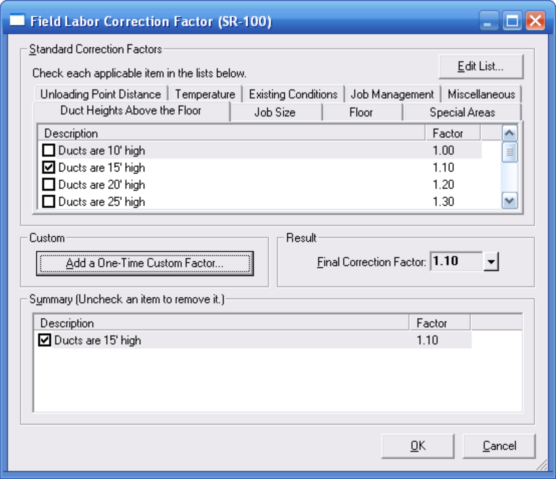

Field Labor Correction Factors (Project Bill of Materials Window) |
  
|
Field Labor Correction Factors (Project Bill of Materials Window) |
|
To open this dialog in a project where you have drawn ducts using Manual D Ductsize, select a Manual D Ductsize duct on the drawing, then under the Special tab of the Object Properties window, click the BOM button, then click the button beside the "Field Labor Correction Factor" property. You can also open an "Overall" version of this dialog by clicking the item in the dropdown help for the "Overall Field Labor Correction Factor" input on the Settings grid of the Project Bill of Materials window. This dialog lets you set a factor that will be multiplied by the normal number of hours of field labor for a part, to yield a new, adjusted number of hours of labor that is then used to determine the actual labor cost and price.
To open this dialog in a project where you have created ducts using the Tabular Manual D Ductsize window, select a duct in the tree grid, then click the button beside the Field Labor Correction Factor property in the middle grid.

Edit List: Opens the "Field Labor Correction Factors.txt" file in the NotePad program so you can edit it if you want to. For any changes you make to the file, be sure that you use the exact same formatting as in the existing sections and entries.
Checkable list of factors: Check the box beside each applicable item. You can check multiple items on multiple tabs.
Add a One-Time Custom Factor: Lets you type in a description and factor that you want to use for the current item. Use this feature when you have a factor that is unique for this one part, and whose description does not match any of the ones in the list.
Final Correction Factor: This box shows the final correction factor for the current duct. This value is the product of multiplying all the selected factors together. When the project bill of materials is generated the value shown here will be used to adjust the number of field labor hours required to install the parts generated from the current duct.
Summary: Lists each of the items you have checked in the list. You can uncheck any item that you want to remove from the list.
OK: Applies your changes on this dialog and closes it.
Cancel: Closes this dialog without making any changes.